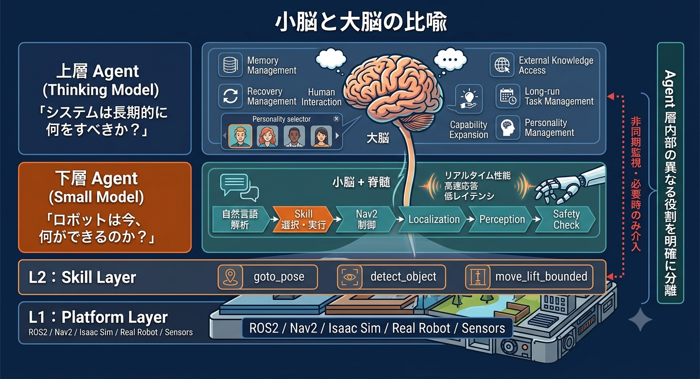
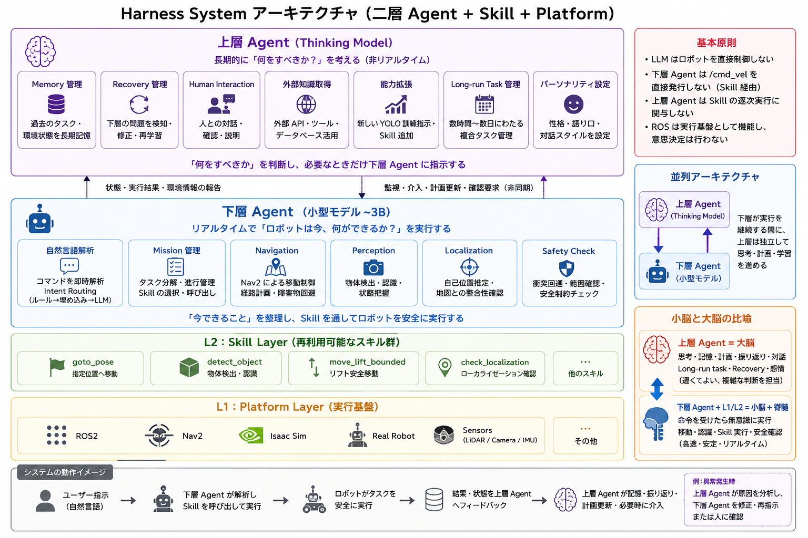
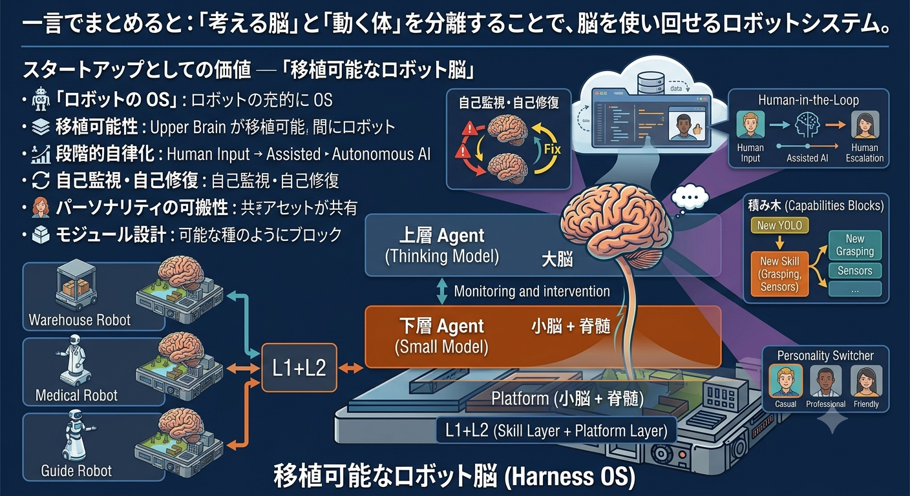

🕐 設計の出発点 — 二つの本質的問い
Core
Agent 層内部における役割の分離
このシステム設計の根幹は、Agent 層の中に役割の異なる二つの階層を置くことにある。
下層 Agent
「ロボットは今、
何が"できる"か？」
何が"できる"か？」
- 自然言語コマンドを即時解析
- Skill を選択・実行
- Nav2 / Localization / Perception / Safety を管理
- リアルタイム・高速・低レイテンシ優先
Small Model ~3B
上層 Agent
「システムは長期的に
何を"すべきか"？」
何を"すべきか"？」
- Memory 管理・長期タスク
- Recovery 管理・下層の監視・修正
- Human Interaction・外部知識取得
- 能力拡張・パーソナリティ設定
Thinking Model

設計の出発点 — 二つの本質的問い・小脳と大脳の比喩・並列アーキテクチャ概要
Parallel
上層と下層は直列ではなく並列に存在する
上層と下層は一本のパイプラインではない。下層が実行を継続している間、上層は独立して思考・計画・学習を進める。 上層が下層に介入するのは「問題発生時」「長期計画の更新時」「人間確認が必要な時」のみ。
人間が「歩きながら考える」ように、下層が体を動かしている間、上層の大脳は思考・記憶・対話に集中できる。
上層の計算リソースを「ロボットの足の動かし方」に使わなくてよい。
🏛 詳細アーキテクチャ

Harness System 完全アーキテクチャ図 — 上層 Agent / 下層 Agent / Skill Layer / Platform Layer の全体関係
Principles
基本原則（絶対に守る）
| 原則 | 内容 |
|---|---|
| LLM はロボットを直接制御しない | Harness → Skill → ROS を経由する |
| 下層 Agent は /cmd_vel を直接発行しない | Skill Layer 経由のみ |
| 上層 Agent は Skill の逐次実行に関与しない | 非同期監視・必要時のみ介入 |
| ROS は実行基盤として機能し、意思決定は行わない | L1 Platform は実行のみ担う |
🌏 上層 Agent の独立性 — 汎用ロボット脳へ
Portability
上層はハードウェアに依存しない
上層 Agent が知るのは goto_pose・detect_object・move_lift_bounded といった
意味のある能力インターフェース（Skill API）だけ。底層が何のロボットなのかは意識しない。
- Isaac Sim でテストしたものをそのまま実機に持っていける
- 上層 Agent を別の機種へ移植 → 上層はほぼ変更なし
- 変わるのは下層の Skill 実装（ハードウェア固有部分）のみ
上層 Agent にはパーソナリティを設定できる。コア能力（Memory・Recovery・推論）は全 Harness 共通だが、
語り口・判断スタイル・対話設計は用途・シナリオに合わせてカスタマイズ可能。
🔄 Self-Verification Loop — 自己監視と段階的エスカレーション
Loop
三段階の責任分担
外部に頼らず、システムが自分自身の問題を発見・修正する内部ループ。解決できない問題だけを段階的に上位へエスカレーションする。
1
下層 Agent 自身が対応 — localization 悪化 → spin recovery を自動実行。Nav2 失敗 → Skill 内リトライ。
2
上層 Agent が介入 — 繰り返し失敗を検知 → 原因分析・再計画・Skill 更新指示。新しい YOLO モデルの訓練指示など。
3
Human-in-the-Loop — 上層 AI でも解決不可 → 人間に状況を説明し判断を求める。
初期段階では「上層 Agent」の役割を人間のオペレーターが担うことができる。
システムが成熟するにつれて、人間が担っていた判断を徐々に AI が引き継ぐ。
これは安全に段階を踏んだ自律化のロードマップでもある。
🧩 モジュール拡張性
Modular
ハードウェアを追加しても既存部分は壊れない
マニピュレーターを追加するケース：
| 変更が必要な部分 | 変更不要な部分 |
|---|---|
| L2: pick_object / place_object（Skill 実装追加） 下層 Agent: Manipulation Agent（追加） |
上層 Agent（Skill API は変わらない） 既存の他の Skill・Agent |
ある現場で設計した Skill の思想は他のシステムへ借用できる。 ハードウェア固有の問題はローカル適応で解決し、上位の設計思想は変えない。
🚀 スタートアップとしての価値 — 「移植可能なロボット脳」

移植可能なロボット脳（Harness OS）— スタートアップとしての6つの価値軸
「ロボットの OS」
スマートフォンに Android があるように、ロボットにも「脳の OS」が必要。ハードウェアが変わっても、OS は同じものが動く。
移植可能性
倉庫・医療・案内 — 上層の脳は同じ、Skill だけが違う。ハードウェア刷新のたびにシステム全体を作り直す必要がない。
段階的自律化
最初は Human-in-the-Loop。人間が上層を担い、徐々に AI が引き継ぐ。急激な自律化ではなく、安全なバトンタッチ。
自己監視・自己修復
ロボットがエラーに気づき、自分で直す。それでもダメなら人に聞く。長期運用での信頼性を担保する設計。
パーソナリティの可搬性
コア能力は全 Harness 共通。語り口・判断スタイルは用途ごとにカスタマイズ。「このロボットらしさ」をソフトで定義・継承できる。
モジュール設計
機能を足しても既存が壊れない。ある現場で磨いた Skill は別の現場のロボットにも移植できる。設計の横展開コストが低い。
「考える脳」と「動く体」を分離することで、
脳を使い回せるロボットシステム。
脳を使い回せるロボットシステム。
Harness OS — Portable Robot Brain